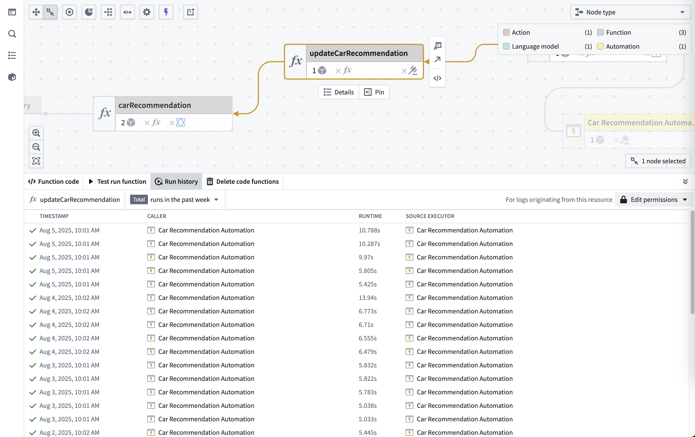
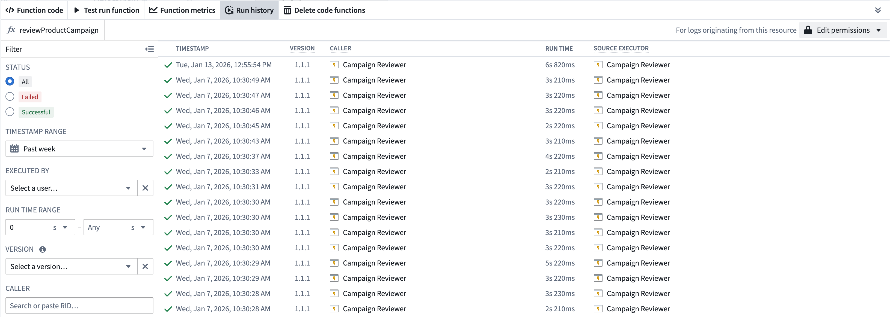

Run history
To see the run history for a Function, Action or automation, navigate to the resource, then select the Run history tab. This provides a complete view of all executions over the past 30 days.

Run history data
The Run history table includes:
- Timestamp: When each execution finished.
- Status: Success (â) or failure (â).
- Runtime: Total execution time.
- Caller: The resource that triggered the execution; this can be a Workshop application, Agent, Third-party application, Automation, Action, or other system component.
- Source executor: The top level executable resource type (limited to Function, Action, or Automation) in the call chain.
The run history displays executions from the past 30 days, sorted by timestamp.
Limitations
- UDFs in Pipeline Builder: Execution history is not available for user-defined functions (UDFs) run from a sidecar container, such as in Python or Java UDFs.
Filter run history
You can filter the results by:
- Status: View successful or failed executions.
- Timestamp range: View executions within a specified date range.
- User: View executions triggered by a specific user.
- Run time range: View executions within a specified duration range.
- Version: View executions for a specified version (only applicable for functions).
- Caller: View executions originating from a specified resource.
- Failure type: View executions that failed for a specific reason. Learn more about function and action failure types.
If more than one filter is specified, the results will be filtered to include only those that match all specified filters.
Inspect a specific execution
To inspect a specific execution, select the View log details option to access the full trace and debugging information.

Next steps